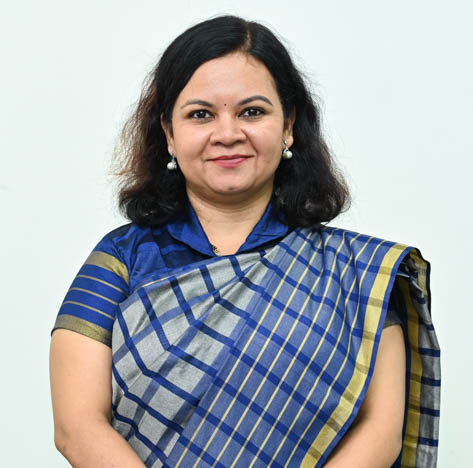

Prof. Priya Bahirnath Kale
Assistant Professor

Assistant Professor
Mrs. Priya Kale is an experienced Assistant Professor at Dr. Vishwanath Karad MIT World Peace University, with 17 years of teaching experience. She holds a Master's degree in Marathi, a Master's in Education, a SET qualification, and a Diploma in Communication and Journalism. Currently, she is pursuing her Ph.D. in Stress Management and Happiness Index of secondary School students from Savitribai Phule Pune University. Priya specializes in Pedagogy of Language, Reading and Reflecting on Text, Guidance and Counseling, Learning and Teaching, and Use of ICT in the Classroom. She is a State Level Certified Trainer from MSCERT for making audio-visual aids for Primary and Secondary School Teachers, and conducts workshops on ‘Making Traditional and Advanced Teaching Aids’ for school teachers. She is also an approved counselor for IGNOU Courses. Priya has presented 10 research papers at national and international conferences and journals and attended over 100 seminars, workshops, conferences, and symposiums at the state/national and international levels. Her mentees received 2nd Prize in MIT-WPU's Innovation Hackathon 2022 under her guidance, and she won 3rd Prize in the Teaching Learning Evaluation Hackathon organized by Symbiosis International University. Priya is associated with various secondary schools in Pune for academic collaboration and has guided more than 500 school teachers about Pedagogy and Research. She has contributed 1 article to a Marathi book titled ‘Maayleki-Baapleki,’ which won the R. N. Chavan Award by Maharashtra Govt. in 2021. She is also a freelance writer for Marathi News Portals, including ‘Aksharnama’, "ESakal', 'Lokmat'. Priya has written a textbook titled “Bhashik Kaushalya Vikas ani Adhunik Marathi Sahityaprakar: Kadambari ani Lalit Gadya” for Second Year B.A. (Marathi) program and “Teaching – Learning Process” (Adhyapan –Adhyayan Prakriya) Third Year B.A. (Education) Programs at Savitribai Phule Pune University.
Education, Psychology
Profiles